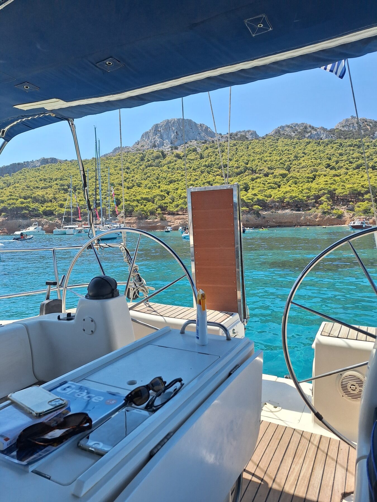
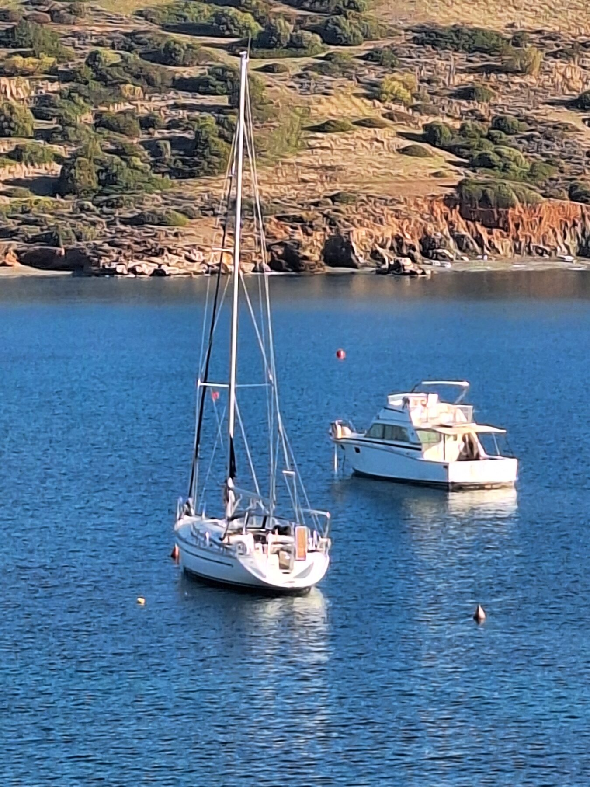
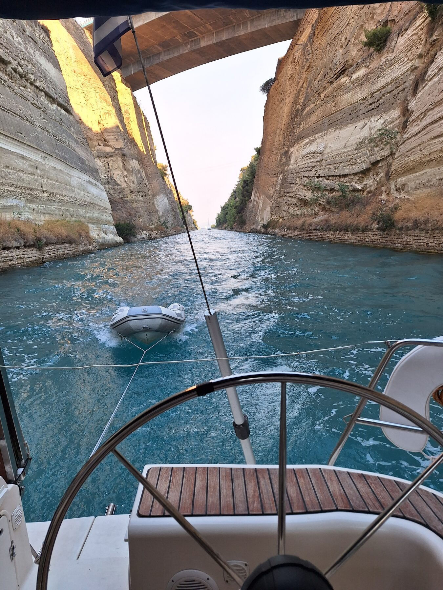
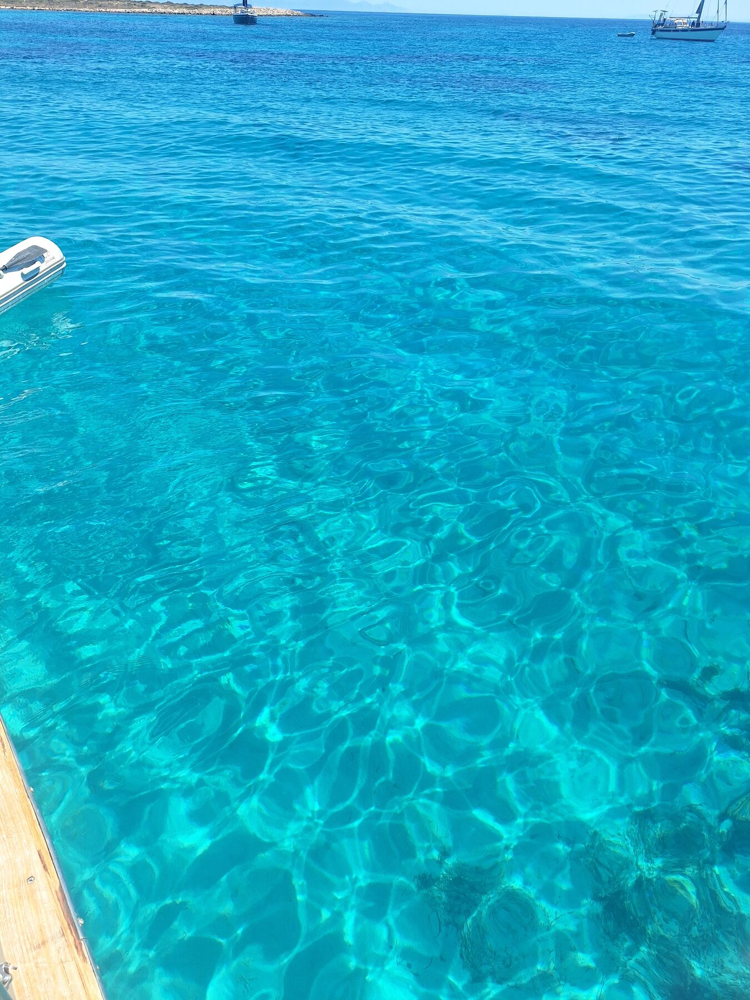
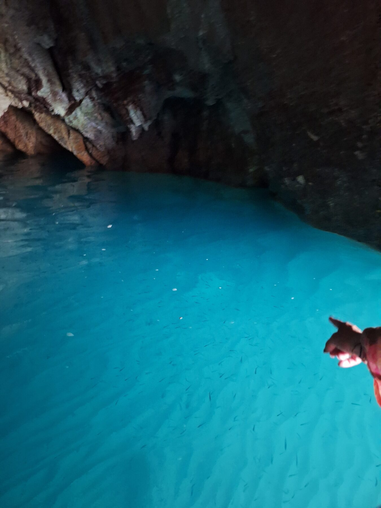
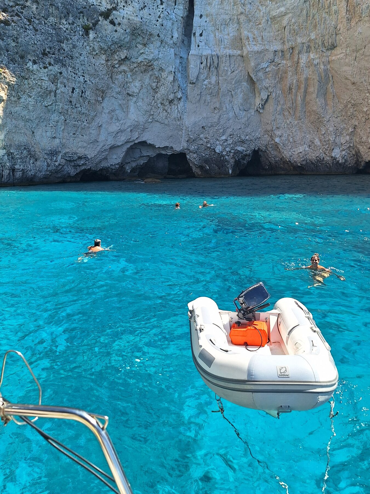
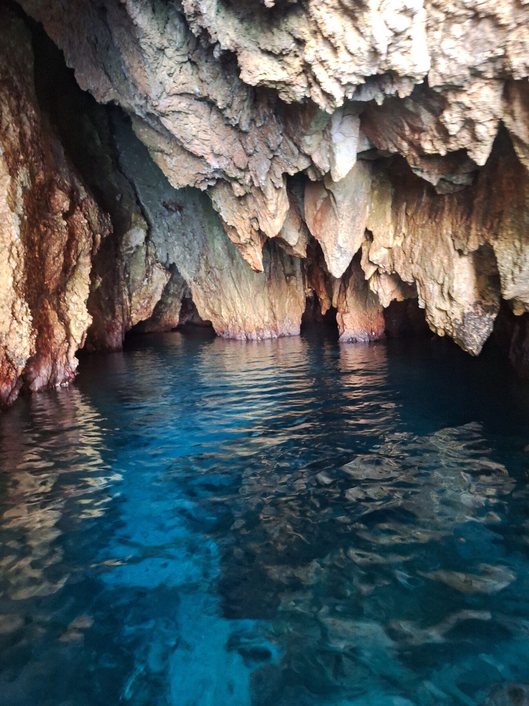
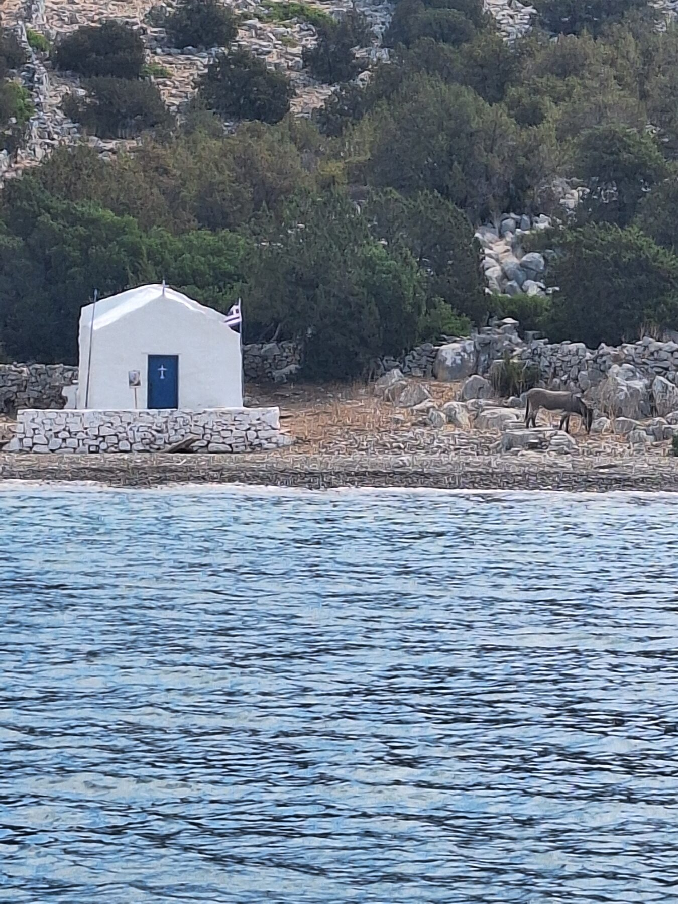
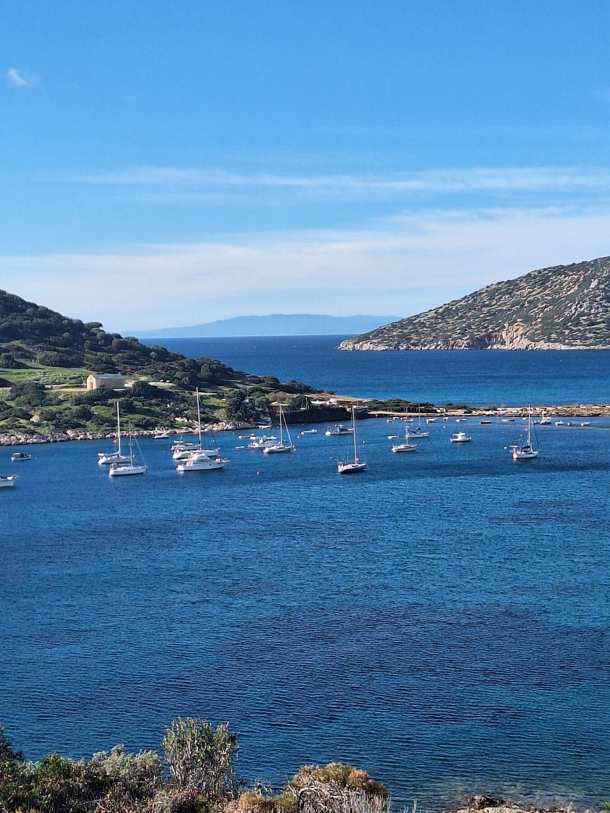
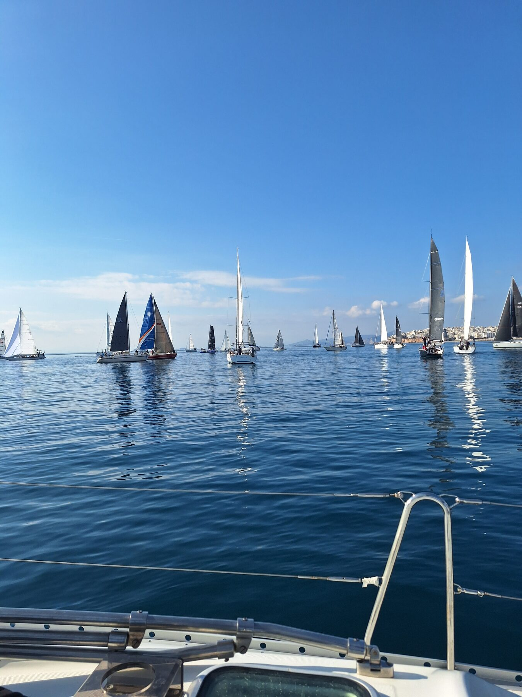

Sail the Saronic the way it was meant to be sailed
Private sailing trips and sunset cruises from Saronida, hosted by Captain Theodoros aboard his Bavaria 44. Hidden coves, fresh food cooked on board, and real Greek filoxenia — no crowds, just your group and the sea.
★ Captain-owner hosted● Up to 8 guests, fully private● 40 min from Athens
What we offer
Choose your day on the water
Every trip is private to your group and shaped around you — whether that's a lazy day of swimming, a golden-hour cruise, or a multi-day escape through the Saronic islands.
Most popular

Private Day Trip
A full day exploring the Saronic Gulf — swim stops in quiet coves, lunch cooked fresh on board, and as much or as little sailing as you like. Anavyssos, Aegina and Agistri are all within reach.
Cast off in the late afternoon and sail into the sunset with a glass in hand. A few hours of calm water, soft light and the Athens Riviera coastline glowing behind you.
Birthdays, proposals, anniversaries or an intimate gathering at sea. Tell us the occasion and Captain Theodoros will tailor the route, the food and the timing to match.
Two days or a week — island-hop through the Saronic and beyond at your own pace. Sleep on board, wake up in a new bay, and let the captain handle the rest.
Roomy decks for sunbathing, a shaded cockpit for long lunches, and a cabin below for shade or an overnight stay. She's a proper cruising yacht: stable, easy underway, and kept in beautiful condition by the captain who sails her every week.
This isn't a chartered-out hull you'll never see again. She's Theodoros's boat, and it shows in every coil of rope and polished fitting.
13.4 m sailing yacht
Up to 8 day guests
Shaded cockpit
Swim ladder & gear
Fresh-water shower
Galley on board


Your host
Meet Captain Theodoros
Theodoros has spent his life around boats and a good part of it travelling the world — and he brings both to every trip. He reads the wind, knows where the quiet coves are, and cooks the kind of fresh Greek food you'll still be talking about on the drive home.
Sailing with him feels less like a chartered tour and more like a day out with a friend who happens to own a yacht. That's the whole point.
You sail with the person who owns and loves the boat — not a rotating crew.
🍋
Fresh food on board
Real Greek cooking prepared by the captain, not a packed lunch from a box.
🤍
Always private
Just your group. No strangers, no fixed itinerary, no rush.
📍
Minutes from Athens
Depart Saronida — 40 min from the city, 25 min from the airport.
On the water
A few moments from recent trips
Real photographs from sailing the Saronic Gulf and the Athens Riviera aboard the yacht.







Good to know
Frequently asked questions
Where do the trips depart from?
From Saronida on the Athens Riviera — about 40 minutes from central Athens and 25 minutes from Athens International Airport. We confirm the exact meeting point when you book.
How many people can come?
The yacht comfortably hosts small private groups of up to 8 guests for day trips and sunset cruises. Every trip is private to your group only.
Is food and drink included?
Yes — Captain Theodoros cooks fresh Greek food on board, and water and basic drinks are included. Special menus, wine or extra provisions can be arranged in advance.
Do we need any sailing experience?
None at all. The captain handles everything. You're welcome to take the helm and learn, or simply relax with a swim and a drink.
What if the weather turns?
Safety comes first. If conditions are unsafe we'll reschedule to another day or refund your deposit, as set out in our Terms.
How do we book?
Message us on WhatsApp with your preferred date and group size and we'll confirm availability and the deposit. It's quick and personal.
Let's get you on the water
Plan your sailing trip
Tell Captain Theodoros your dates and what you have in mind — a swim day, a sunset, a celebration. He'll reply personally on WhatsApp, usually within the hour.